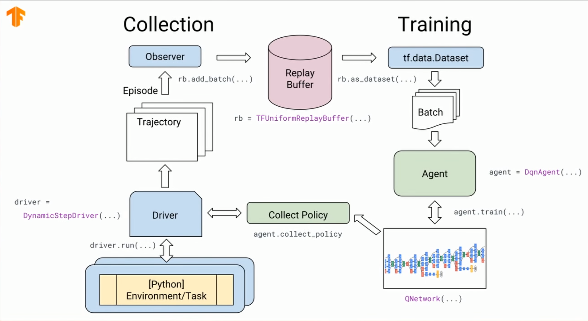

### Preparation
Ablauf 1. Intro * Liste von erlenten Tricks: https://twitter.com/mogwai_poet/status/1060286856493813760 * Lustige Anwendung: https://ai.googleblog.com/2019/06/introducing-google-research-football.html * Mehr aus Intro Talks 1. Modellierung * Übung: Gruppen erarbeiten ihr Modell 1. Umsetzung mit tf-agents und PPO, vordefinierter Code oder mehr Freiheit, je nach halbtags / ganztags 1. Weitere Strategien
Material aus Intro Talk und RL Folien wie in Göteborg Struktur diskutieren - Welche Schritte für welchen Workshop? - Wie gehen wir mit langen Trainings Zeiten um? - Wie viel geben wir vor? - Einfaches Environment und dann Ideen diskutieren lassen?
Dopamine #RL users, now you can see your trained agents play Atari games!🚨 Really happy to announce that we've added a modular visualization library for generating images and videos of a trained #RL agent playing. (link: https://github.com/google/dopamine) github.com/google/dopamine https://twitter.com/pcastr/status/1138403466613796864
### Installation * https://github.com/tensorflow/agents * https://www.tensorflow.org/beta * https://www.tensorflow.org/install/gpu * https://www.tensorflow.org/community/roadmap * Probability und Agents kommen erst später * tf-probability soll bald (nach 1.14) ins nightly kommen https://github.com/tensorflow/tensorflow/issues/25350
## Workshop Reinforcement Learning
## Implementation using Tf-Agents and TensorFlow 2 https://github.com/tensorflow/agents
### Overview <img src='img/tf-agents-overview.png' height="500px"> <small> https://www.youtube.com/watch?v=tAOApRQAgpc </small>
### Code  <small> https://www.youtube.com/watch?v=-TTziY7EmUA </small>
### Notebooks https://colab.research.google.com/github/DJCordhose/ml-workshop/blob/master/notebooks/rl/berater.ipynb